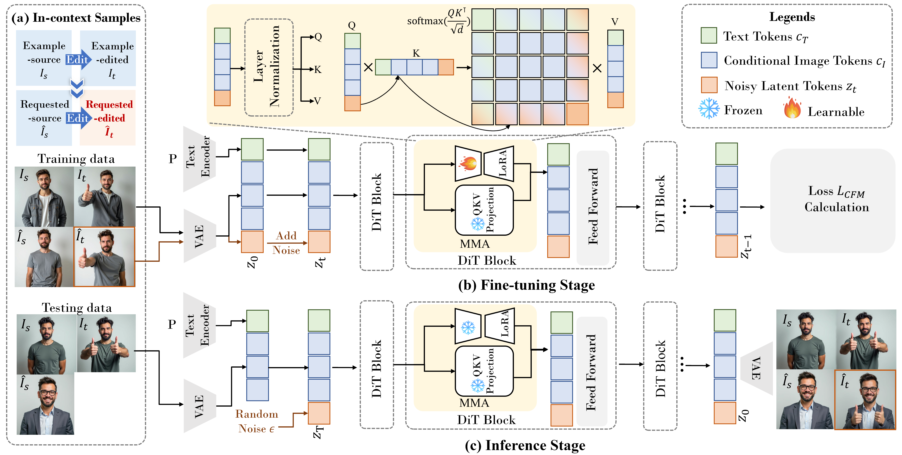

We introduce a new setting, Edit Transfer, where a model learns a transformation from just a single source–target example and applies it to a new query image. While text-based methods excel at semantic manipulations through textual prompts, they often struggle with precise geometric details (e.g., poses and viewpoint changes). Reference-based editing, on the other hand, typically focuses on style or appearance and fails at non-rigid transformations. By explicitly learning the editing transformation from a source–target pair, Edit Transfer mitigates the limitations of both text-only and appearance-centric references. Drawing inspiration from in-context learning in large language models, we propose a visual relation in-context learning paradigm, building upon a DiT-based text-to-image model. We arrange the edited example and the query image into a unified four-panel composite, then apply lightweight LoRA fine-tuning to capture complex spatial transformations from minimal examples. Despite using only 42 training samples, Edit Transfer substantially outperforms state-of-the-art TIE and RIE methods on diverse non-rigid scenarios, demonstrating the effectiveness of few-shot visual relation learning.
Pipeline

Visual relation in-context learning for Edit Transfer. (a) We arrange in-context examples in a four-panel layout: the top row
(an editing pair \((I_s, I_t)\)) and the bottom row (the query pair \(( \hat{I}_s, \hat{I}_t )\)). Our goal is to to learn the transformation from \(I_s\) \(\rightarrow\) \(I_t\), and apply
it to the bottom-left image \(\hat{I}_s\), producing the target \(\hat{I}_t\), in the bottom-right. (b) We fine-tune a lightweight LoRA in the MMA to better
capture visual relations. Noise addition and removal are applied only to \(z_t\), while the conditional tokens \(c_T\) ( derived from \((I_s, I_t, \hat{I}_s)\) )
remain noise-free. (c) Finally, we cast Edit Transfer as an image generation task by initializing the bottom-right latent token \(z_T\) with
random noise and concatenating it with the clean tokens \(c_I\). Leveraging the enhanced in-context capability of the fine-tuned DiT blocks,
the model generates \(I_t\), effectively transferring the same edits from the top row to the bottom-left image.
Traning data samples.
To encode a clear "source image \(\rightarrow\) edited image" order, we arrange each example-request pair into a 2 × 2 composite: the first row contains the example pair (Is, It), and the second row contains the request pair \((\hat{I}_s, \hat{I}_t)\).
Generalization Performance
Generalization performance of Edit Transfer. Our model demonstrates remarkable generalization by: (b) Generating novel
pose variations within a given editing type, even if such variations were unseen during training; (c) Flexibly combining different editing
types; (d) Transferring its capabilities across other species
BibTeX
@misc{he2024freeedit,
title={FreeEdit: Mask-free Reference-based Image Editing with Multi-modal Instruction},
author={Runze He and Kai Ma and Linjiang Huang and Shaofei Huang and Jialin Gao and Xiaoming Wei and Jiao Dai and Jizhong Han and Si Liu},
year={2024},
eprint={2409.18071},
archivePrefix={arXiv},
primaryClass={cs.CV},
url={https://arxiv.org/abs/2409.18071},
}